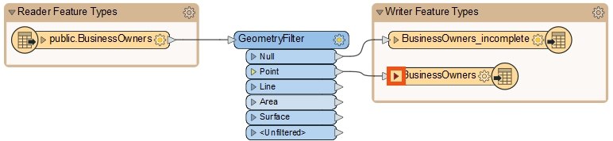
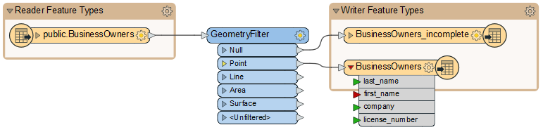
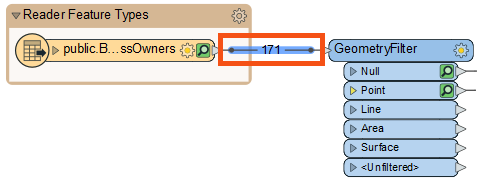
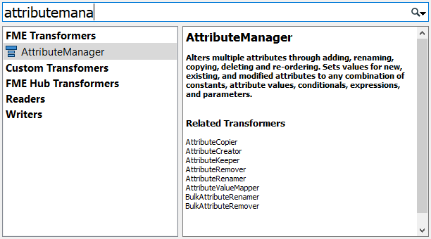
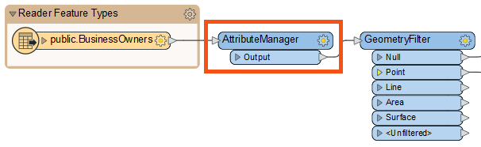
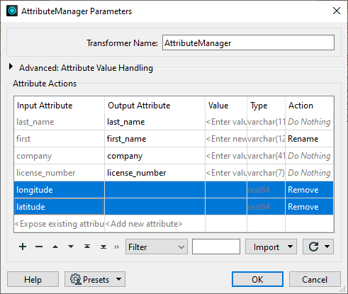
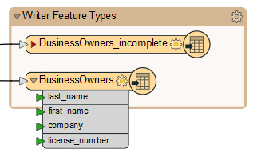
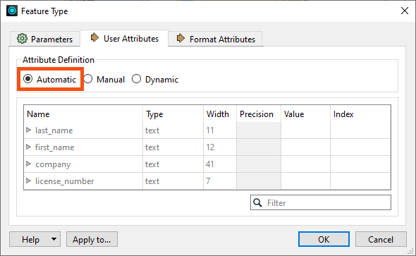

Learning Objectives
After completing this lesson, you’ll be able to:
- Explain the conceptual role of a transformer in FME.
- Use a transformer to edit features’ schema.
- Automatically adopt features’ schema by using Automatic Attribute Definition mode.
Resources
- Starting workspace
- C:\FMEData\Workspaces\IntegrateDataWithTheFMEPlatform\map-datas-schema.fmw
- Complete workspace
- C:\FMEData\Workspaces\IntegrateDataWithTheFMEPlatform\map-datas-schema-complete.fmw
Determine Schema Mapping Goals
Now that Jennifer has created a workspace that edits the PostGIS data’s schema, she has to map it, telling FME how the original and new schemas are related.
She opens the workspace in FME Workbench (2023.0 or later) and notices the triangle icon on her writer feature type has turned red.

She clicks the triangle to expand the list of attributes entering the feature type.

FME uses colored ports to indicate the status of schema mapping. In this case, the red port means an attribute exists on the writer feature type but not on the features entering the feature type. An attribute with a red port will not cause an error when the workspace is run, but it will not have any values in the written data.
To ensure her new first_name attribute gets the same values as her existing first attribute, we must map the new schema onto the old one. We can use the AttributeManager transformer for that.

Colored ports are used to aid schema mapping visually:
- Green ▶: this attribute is connected.
- Yellow ▶: this reader feature type attribute is not mapped to any writer feature type; therefore, this attribute will not be in the output.
- Red ▶: this writer feature type attribute is not connected. While it exists in the schema, it will not receive any data and, therefore, will not have any values in the written data.
Add an AttributeManager
Jennifer clicks the black feature connection line between the reader feature type and the GeometryFilter to select it. She observes the light blue highlight indicating the line is selected.

Feature connection line: these lines connect feature types and transformers on the canvas and control the flow of features from left to right.
When any object on the canvas is selected, using Quick Add will automatically connect the new object. With the feature connection line selected, Jennifer types in “AttributeManager.” The Quick Add dialog appears, letting her search for transformers, readers, and writers. She finds the AttributeManager and presses Enter to add it.

The AttributeManager appears on the canvas. Jennifer double-clicks it to open its Parameters dialog.

All transformers have parameters that control how they operate. These parameters are unique to each transformer. The parameters button is also color-coded. Red means that you must set parameters, yellow means that FME will use default settings but haven't reviewed them, and blue means that you've set or reviewed them.
Map Schema with an AttributeManager
The AttributeManager parameters are a table that defines how to modify attributes. It allows you to create new attributes, edit existing attribute names, change their order, and set their values.
Jennifer plans to use this transformer to change incoming features so their schema matches the writer feature type.
First, she clicks in the Output Attribute column for the first attribute and renames it “first_name.” Then she clicks the Move Down button to change the attribute order. Then she Shift + clicks the latitude and longitude attribute rows and clicks the Remove Row button to delete them. Her dialog looks like this:

⭐ New for FME 2023.0: the AttributeManager can now change attribute types.
Learn More
She clicks OK. Now the attribute ports on the writer feature type all turn green, showing her schema is mapped.

However, Jennifer notices a slight problem: BusinessOwners looks good, but BusinessOwners_incomplete still has its original schema. How can she quickly update the schema to match the incoming features?
Jennifer knows she can use Automatic Attribute Definition mode for this task. She double-clicks on BusinessOwners_incomplete and then clicks the User Attributes tab. The first section of this dialog is Attribute Definition.
There are three attribute definition modes for writer feature types. You can set these when adding a writer or after in the writer feature type parameters. They each have pros and cons depending on your needs:
- Manual mode lets you define the schema. It's the default mode. When adding a writer, you can choose the default feature type definition mode Copy from Reader. That mode copies the schema from one or more reader feature types to the writer feature types. It then sets the writer feature types' attribute definition mode to Manual, so you can edit them as we have been doing. Writer feature types will also be set to Manual if you choose the feature type definition mode Manual. In that case, you must specify the entire schema yourself from scratch.
- Choose Manual mode if you are defining a new schema and want to be able to ensure all incoming features meet its requirements. Don't forget to check for red ports that indicate your schema is not mapped correctly.
- Automatic mode will tell the feature type to adopt the schema of whatever features are connected to it. It looks empty until it is connected to a stream of data. Then it adopts the incoming schema. FME sometimes has to guess the data types, so you should check them before writing. You can always use Automatic to set the schema, then change to Manual to edit it.
- Choose Automatic mode if you want to create the writer schema from incoming features quickly. The one catch is that it might not choose the exact correct attribute data type, so don't forget to check those.
- Dynamic mode is an advanced option that tells the feature type to write whatever schema it receives at run-time. Unlike all the other modes, this schema does not have to be defined at authoring time. You can learn more about dynamic writing in the Advanced Reading and Writing learning path.
- Choose Dynamic mode if you need to write out data and do not know the schema in advance or expect it to change over time.
You get a few more feature type definition options when adding a writer.
Learn More
Why didn’t Jennifer use Automatic mode first if it was so easy? Well, she had first to edit the schema upstream using the AttributeManager. As the data flows from the reader feature type, it gets edited in the AttributeManager. When set to Automatic mode, these changes will be reflected automatically in the writer feature type. If she left it on Manual, she would have to repeat the edits on the writer feature type.
Jennifer clicks Automatic, and the schema changes to match the incoming features.

If she then wants to make changes, she could click Manual again. She leaves it in Automatic mode and clicks OK. Then she clicks Run.
Exercise
Make sure you have followed along with Jennifer’s steps.